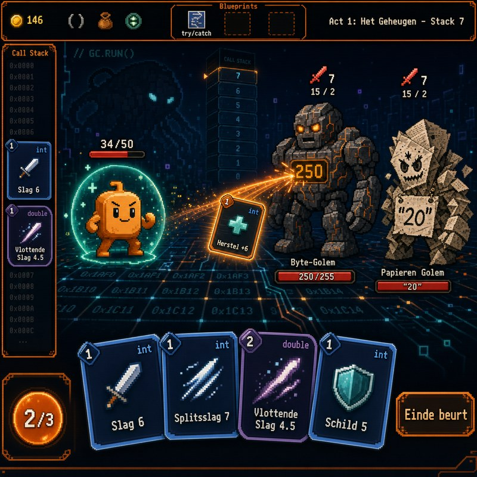

Een volwaardige deckbuilder zonder code in beeld. De wereld volgt C#-regels, en wie ze slim uitbuit, wint. Na elk gevecht geeft de Codex het concept zijn naam.
Beginners leren C# als regels die ze nooit gevoeld hebben, en haken af voor het klikt. [CIJFER: uitval of slaagpercentage eerste jaar]